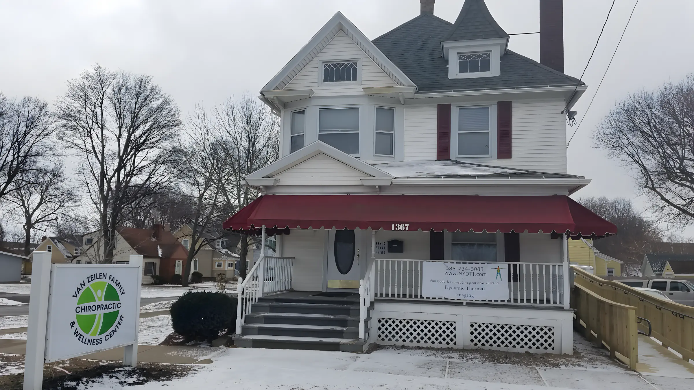

Specific chiropractic adjustments, and the exams and imaging that come before them. Everything is done here at 1367 Ridge Road West, and everything is explained before care starts.

1367 Ridge Road West. Ramp access to the porch on the right.
01
Specific chiropractic adjustments
The heart of what we do. The goal is to reduce and remove interference in your nervous system, known as subluxations, so your body can do what it is built to do, naturally and without drugs.
No mass manipulation of every joint. Dr. Kris uses a range of techniques, from light-force work to more traditional adjusting, chosen for the person on the table.
A thorough spinal and nervous system exam that starts with a complete history and palpation: Dr. Kris checks your spine by hand for position, curves and muscle tone.
X-rays show the position of the spinal bones, the quality of the spine and whether it is safe to adjust, and roughly how long a problem has been there. Most patients have three at the start of care.
Taken here, no separate imaging appointment
Not during pregnancy, not on most children
Not needed if you have recent usable spinal x-rays: bring them
04
Surface EMG and thermal scans
Two quick, non-invasive scans along the spine. The thermal scan reads heat differences from level to level and side to side. The surface EMG measures electrical activity in the muscles along the spine.
They give us a baseline, so progress is measured rather than guessed.
05
Report of Findings
We believe everything should be explained before care starts. A few days after your first visit, you sit down with Dr. Kris for up to an hour to go through your x-rays and scans and agree a care plan.